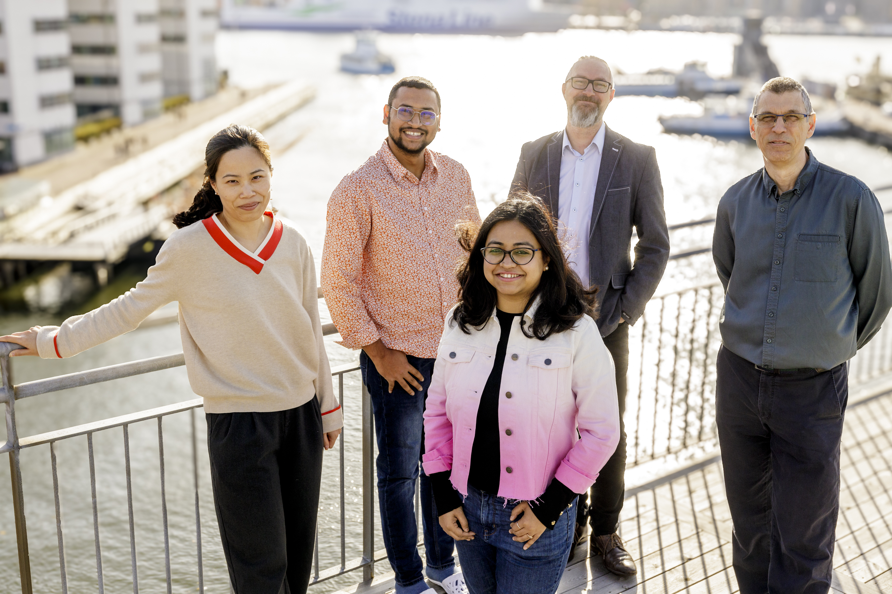

Research areas
- Automotive Software Architectures
- Generative AI in Software Engineering
- Automotive Software Security Engineering
- Software maintainability
- Machine learning for automotive perception
Yet another research group
From University of Gothenburg and Chalmers University of Technology

Miroslaw Staron is Professor of software engineering at the Department of Computer Science and Engineering, Chalmers and University of Gothenburg, Sweden. Prof. Staron is Editor-in-Chief of Information and Software Technology and has regular column in IEEE Software (Practitioner's digest). He is also on the editorial boards of IEEE Software and Elsevier's Journal of Systems Architecture. Prof. Staron has been active in national bodies such as AI Sweden, AI Competence for Sweden, Swedsoft. His work has also been recognized with the title of Excellent Teacher at University of Gothenburg. His research work focuses on software design, metrics, machine learning and software quality. Prof. Staron authored five books and over 250 peer-refereed articles in the area of software engineering.
Wilhelm Meding, MSc EE, has been working as Quality Manager for almost 10 years at Ericsson and previously in similar positions at Volvo Buses and Volvo Cars. He has been actively conducting research in the area of software metrics since august 2006, has published 28 papers so far and conducted over 50 tutorials at the company and outside. He is currently working as Measurement Program Leader at Ericsson, leading a team which manages over 4000 measurement systems for various parts of the organization. Wilhelm Meding has also cooperation with other companies in the area of metrics.
...
...
Simin Sun earned her master’s degree in Computer Science and Engineering from the Eindhoven University of Technology, the Netherlands, in 2023. Currently, she is pursuing a Ph.D. in Software Engineering at Chalmers and University of Gothenburg, Sweden. With over five years of industry experience in software engineering within prominent companies, her research focuses on AI for software engineering. Specifically, she utilizes action research to explore and develop new methods and tools grounded in generative AI models.
...
Phasellus convallis elit id ullamcorper pulvinar. Duis aliquam turpis mauris, eu ultricies erat malesuada quis. Aliquam dapibus, lacus eget hendrerit bibendum, urna est aliquam sem, sit amet imperdiet est velit quis lorem.
Phasellus convallis elit id ullam corper amet et pulvinar. Duis aliquam turpis mauris, sed ultricies erat dapibus.
Phasellus convallis elit id ullam corper amet et pulvinar. Duis aliquam turpis mauris, sed ultricies erat dapibus.
Phasellus convallis elit id ullam corper amet et pulvinar. Duis aliquam turpis mauris, sed ultricies erat dapibus.
Phasellus convallis elit id ullam corper amet et pulvinar. Duis aliquam turpis mauris, sed ultricies erat dapibus.
Phasellus convallis elit id ullam corper amet et pulvinar. Duis aliquam turpis mauris, sed ultricies erat dapibus.
Phasellus convallis elit id ullam corper amet et pulvinar. Duis aliquam turpis mauris, sed ultricies erat dapibus.
Phasellus convallis elit id ullamcorper pulvinar. Duis aliquam turpis mauris, eu ultricies erat malesuada quis. Aliquam dapibus, lacus eget hendrerit bibendum, urna est aliquam sem, sit amet imperdiet est velit quis lorem.